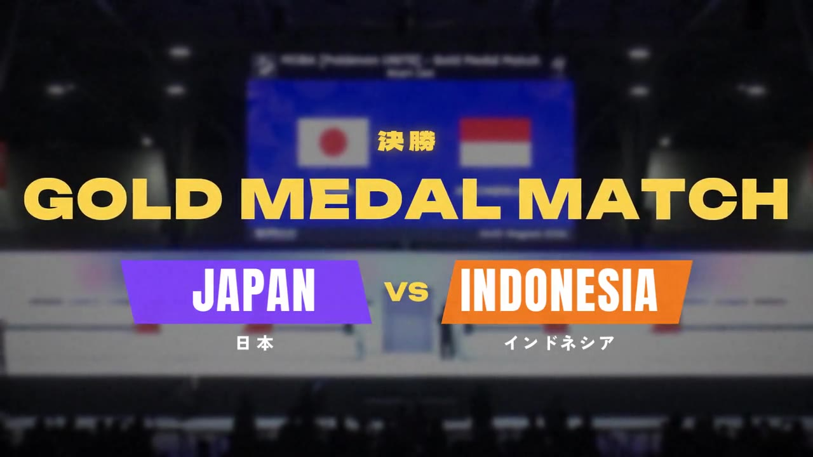

01 / MATCH FILM
UNITE — 完成映像
試合の流れと見どころを一本に。AIを使った編集による、全編約3分45秒の完成映像。
動画を直接開く ↗AI EDITING SHOWCASE
試合の熱量を、映像に刻む。
完成した動画と、その編集を支えるAIのプロセス。
ユナイト動画制作を、2本の映像で紹介します。

完成映像を見る →01 / MATCH FILM
試合の流れと見どころを一本に。AIを使った編集による、全編約3分45秒の完成映像。
動画を直接開く ↗02 / BEHIND THE EDIT
構成や演出をどのように映像へつないだのか。約1分で見る、AI動画編集の制作紹介。
動画を直接開く ↗